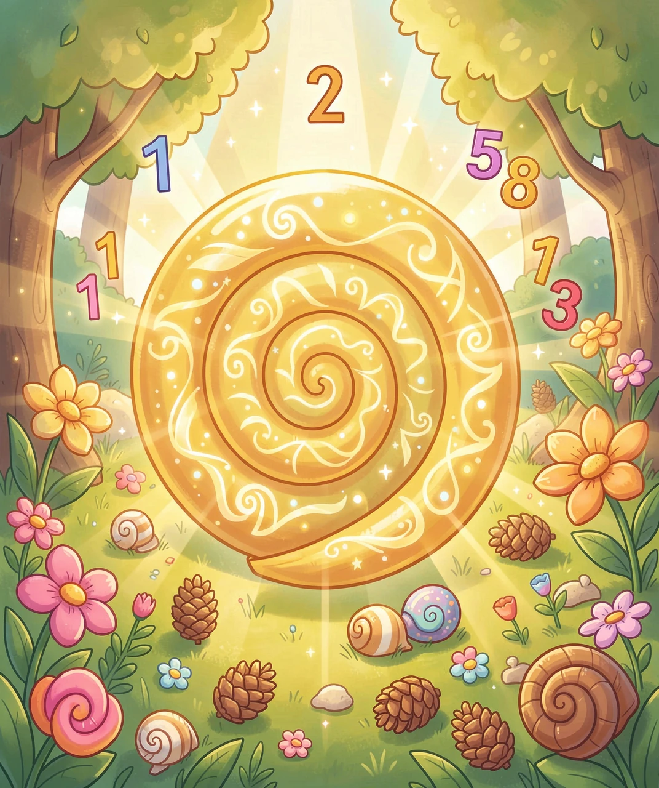
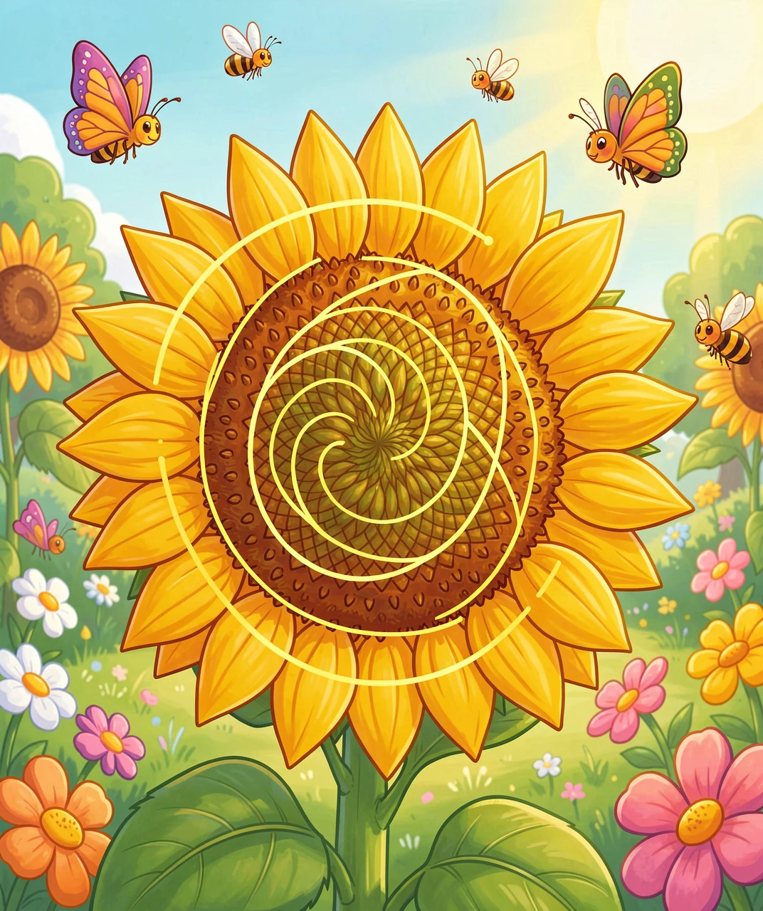
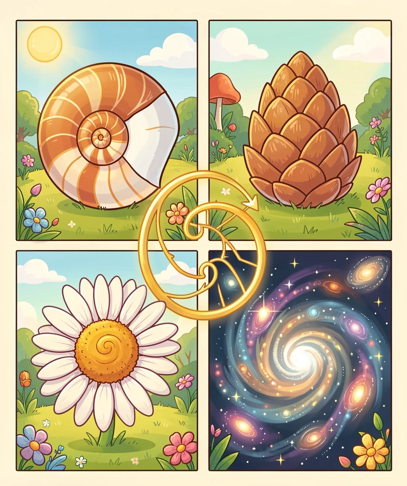
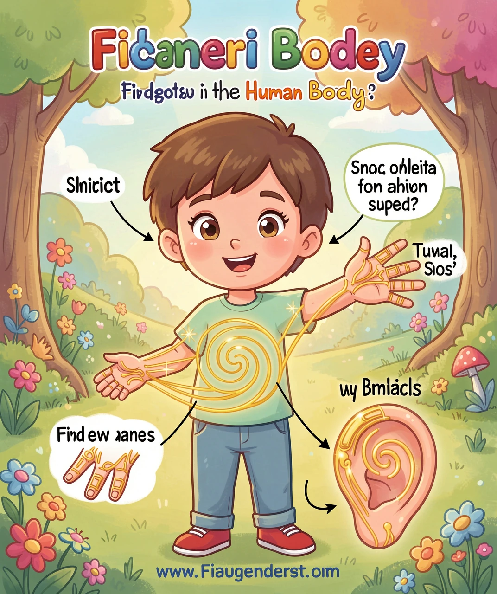
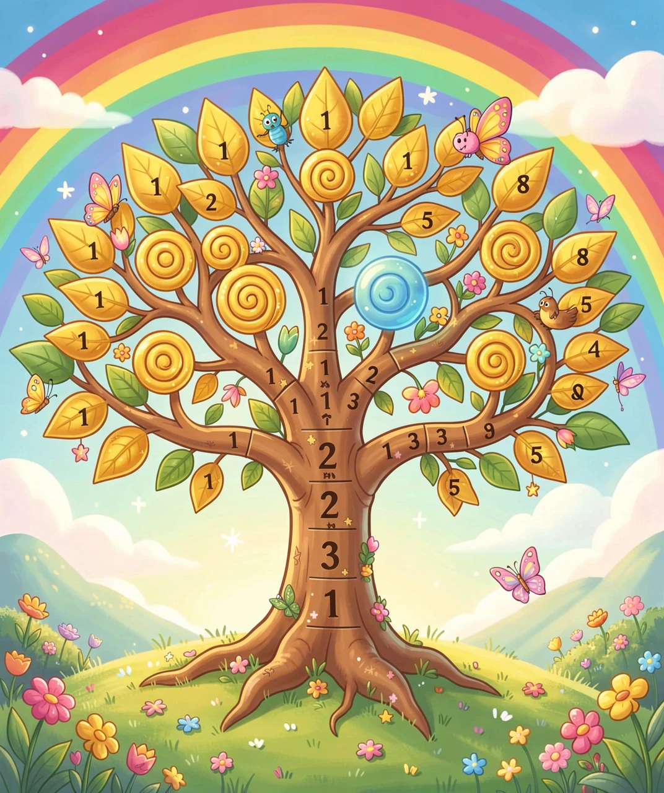

数学藏在每一片叶子里、每一朵花里、每一个贝壳里！
你有没有注意过，向日葵的种子排列成美丽的螺旋线？松果的鳞片也排成螺旋形？甚至台风的云层、银河系的旋臂，都呈现出同样的螺旋形状？
这些看似毫无关系的事物，竟然都隐藏着同一个数学密码——斐波纳切数列！大自然仿佛是一位数学家，用这套密码编写了万物的蓝图。
斐波纳切数列的规则非常简单：从1和1开始，每个数都是前两个数的和。就是这样：

看起来很简单的规则对不对？但就是这么简单的数列，却和自然界有着惊人的联系！800多年前，一位意大利数学家发现了它，他可能做梦也没想到，这个数列竟然是解读大自然的钥匙。
如果你仔细数一数花朵的花瓣数量，会发现一个惊人的规律——很多花的花瓣数正好是斐波纳切数！
向日葵更是斐波纳切的"超级粉丝"！如果你仔细看向日葵花盘中间的种子排列，会发现两组螺旋线：一组顺时针，一组逆时针。数一数，顺时针的螺旋线数量和逆时针的数量，竟然都是斐波纳切数！

为什么会这样呢？这是因为在花芽发育的时候，新的种子以137.5°的角度依次长出——这个角度叫"黄金角"。按照这个角度生长，种子就能排列得最紧密、最均匀，不浪费一丝空间！
斐波纳切数列有一个神奇的"邻居"——黄金比例，大约等于1.618。如果你把斐波纳切数列中相邻两个数相除，会发现结果越来越接近1.618：
如果我们用斐波纳切数作为正方形的边长，依次画正方形，然后在每个正方形里画四分之一圆弧，就能画出这条优美的黄金螺旋！
这条螺旋线在大自然中随处可见：鹦鹉螺壳完美地呈现黄金螺旋形；台风和气旋也是螺旋形；银河系是巨大的螺旋星系；海浪在拍打海岸时也呈螺旋形。

斐波纳切数列和黄金比例不只存在于外面的世界——你的身体里也到处都是！
🖐️ 手指骨头的比例：伸出你的食指，从指尖到手掌，每节骨头的长度比大约是1:1.618。
👂 耳朵的螺旋：你的耳朵形状就是一个黄金螺旋！
🦴 身体各部分的比例：从肚脐到脚底 ÷ 从肚脐到头顶 ≈ 1.618。达芬奇的《维特鲁威人》就是基于这些比例画出来的！

🧬 DNA双螺旋：DNA双螺旋每一圈的高度约34埃，宽度约21埃——34和21都是斐波纳切数！
了解了斐波纳切数列和黄金比例，你会发现它们不只是"好看"——它们还被人类用来创造各种了不起的东西！
🎨 艺术与设计：从古希腊的帕特农神庙到达芬奇的画作，从苹果公司的Logo到Twitter的小鸟图标，很多经典设计都运用了黄金比例。
📱 产品设计：苹果公司一系列产品的比例都接近黄金比例。包括经典的iPod、iPhone、iPad的设计。
🏛️ 建筑：古希腊建筑师早就发现，用黄金比例设计的建筑最稳固、最美观。帕特农神庙的宽度和高度比就是1:1.618！
🎵 音乐：钢琴键盘的排列也暗藏斐波纳切！一个八度音阶有13个键（黑键8个、白键5个），而一个八度内的半音是12个——12和13是相邻的斐波纳切数！
🖼️ 摄影：很多摄影师会用"三分法"构图——其实就是黄金比例的简化版。把画面分成三等份，关键元素放在交叉点上，这样拍出来的照片最吸引眼球！
下次你再看花朵、观察贝壳、甚至是照镜子的时候，想一想——你正在进行一场数学的探索！斐波纳切数列不仅仅是一串数字，它是大自然写给我们的密码，是我们解读宇宙奥秘的钥匙。也许将来，你还能发现更多藏在这个神奇数列里的秘密！

（答案：1-B, 2-B, 3-B, 4-A, 5-B）